Videos and pictures from our farms and food handling operations, added regularly. Enjoy views into how we grow and bring organic food to your table, in this Organic Siri gallery.
 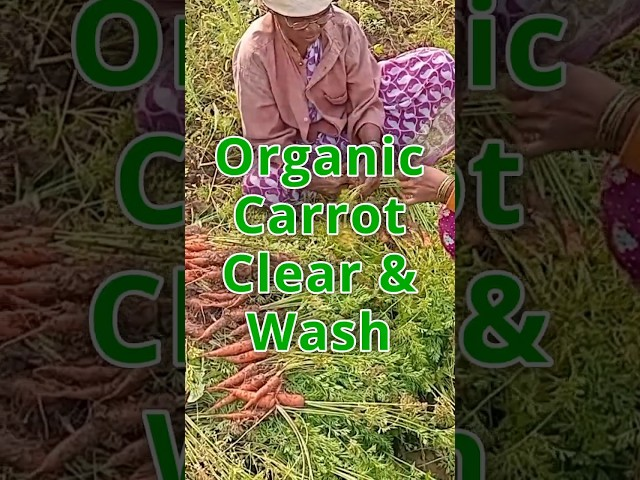
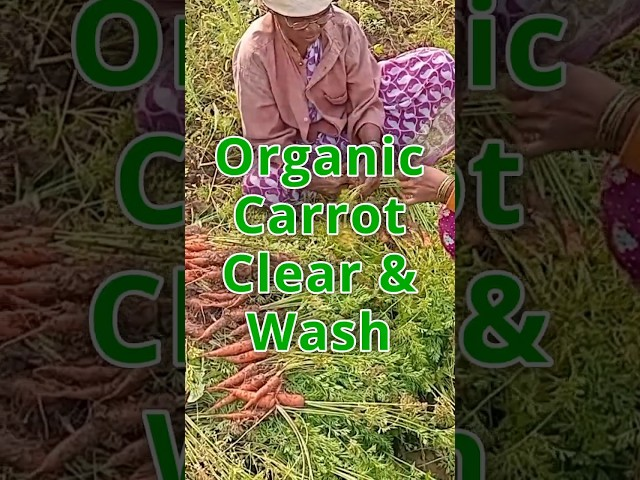 

 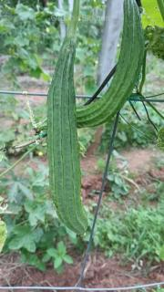
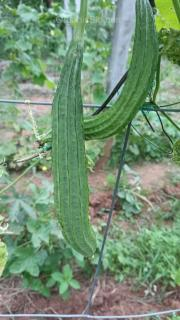 
 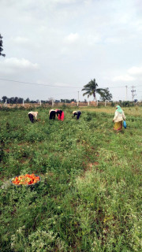
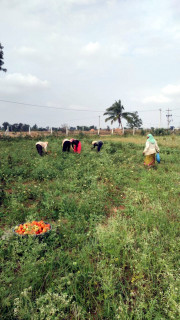  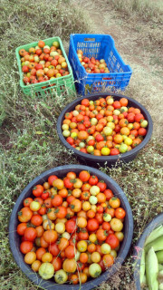
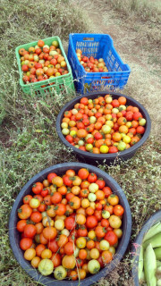  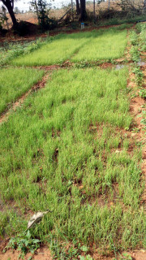
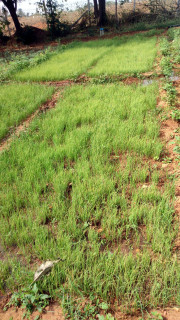  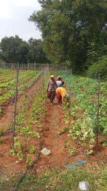
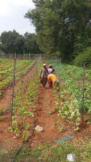  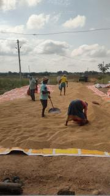
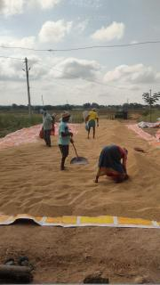 
 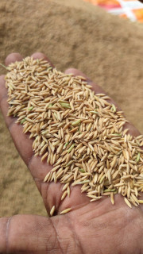
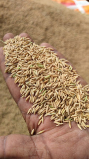 
Major Veggie stocks added Wednesday evenings
Contact Us
siri@organicsiri.com
9908003300
0